P147
3 Video Editing
3.1 Tuning-based
P148
One-Shot Tuned
P149
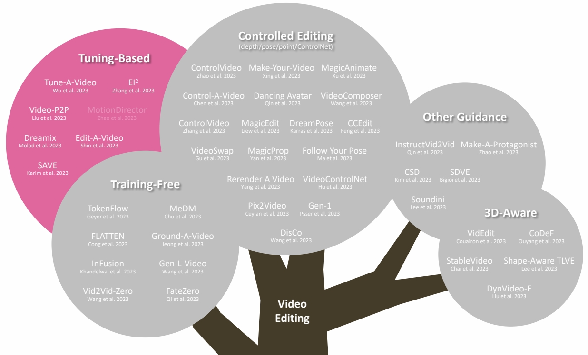
P150
Tune-A-Video
One-shot tuning of T2I models for T2V generation/editing

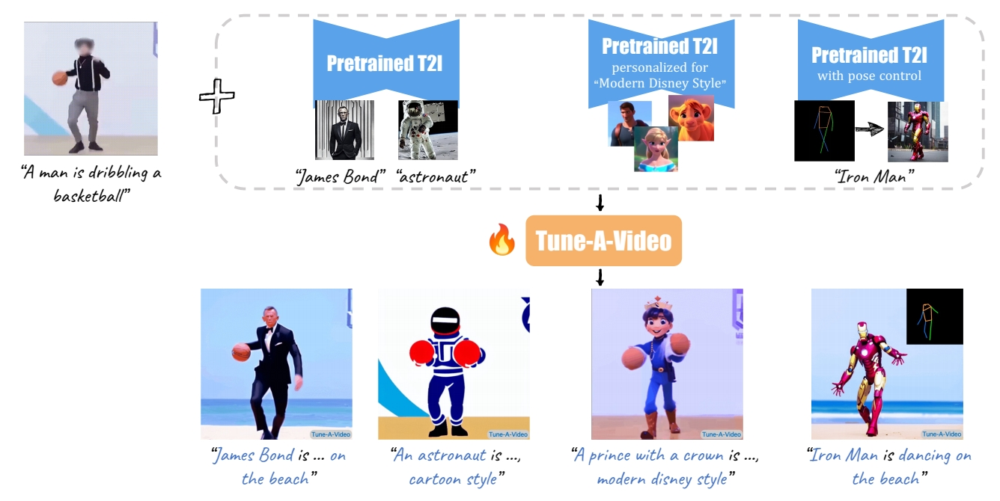
Wu et al., “Tune-A-Video: One-Shot Tuning of Image Diffusion Models for Text-to-Video Generation,” ICCV 2023.
https://github.com/showlab/Tune-A-Video
Motivation
Motivation: appearance from pretrained T2I models, dynamics from a reference video

P153
方法
Obs #1: Still images that accurately represent the verb terms
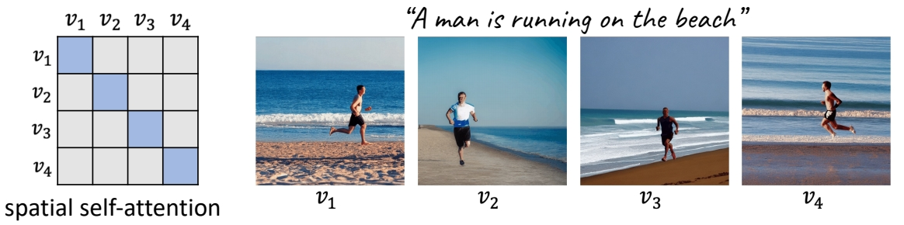
Obs #2: Extending attention to spatio-temporal yields consistent content

P154
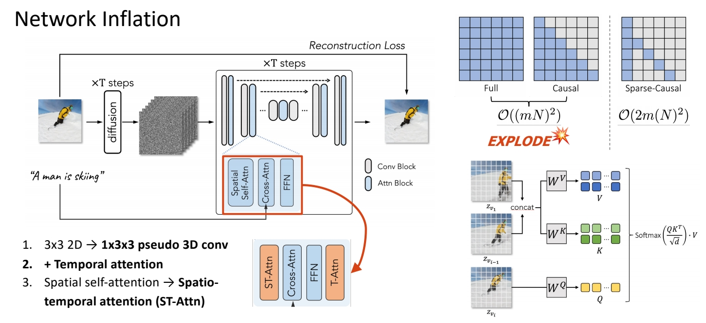
P155
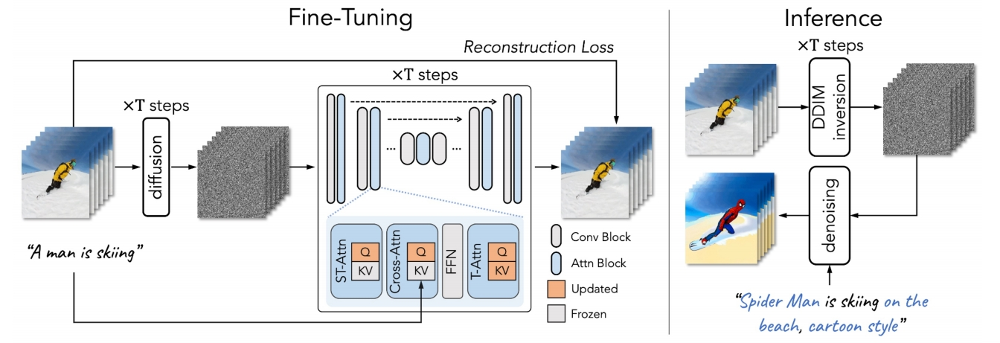
Full finetuning: finetunes the entire network
- inefficient, especially when #frames increases;
- prone to overfitting → poor editing ability.
Our tuning strategy: update the specific projection matrices
- parameter efficient and fast (~10 min);
- retains the original property of pre-trained T2I diffusion models.
\begin{align*} \mathcal{V} ^\ast =\mathcal{D} (\mathrm{DDIM-samp} (\mathrm{DDIM-inv} (\varepsilon (\mathcal{V} )),\tau^\ast ))\end{align*}
Structure guidance via DDIM inversion
- preserves the structural information
- improves temporal consistency
P156
主观效果
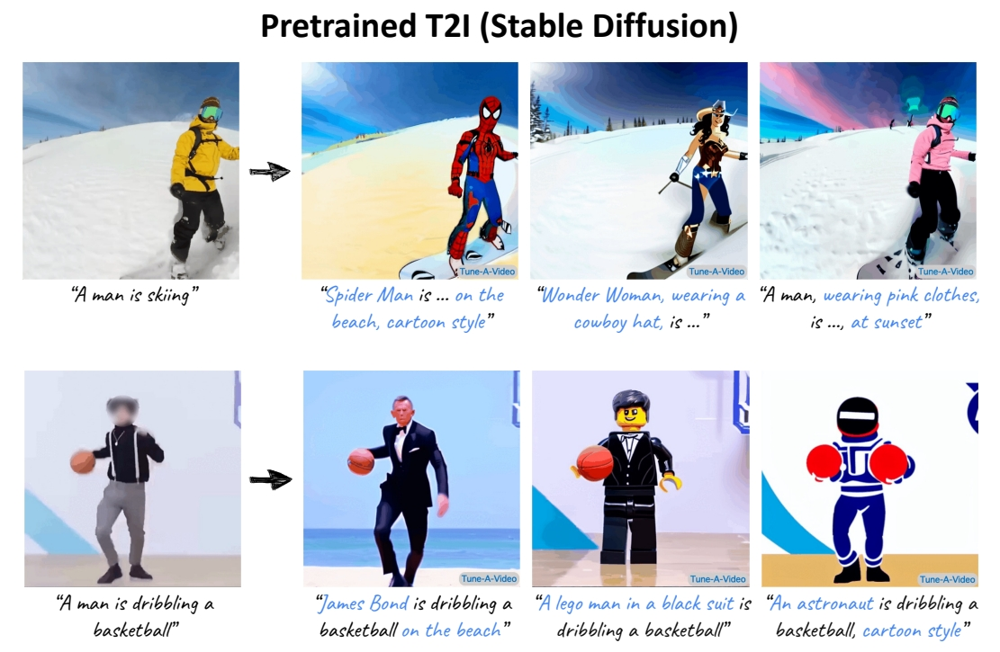
P157
 P158
P158
 P159
P159

P160
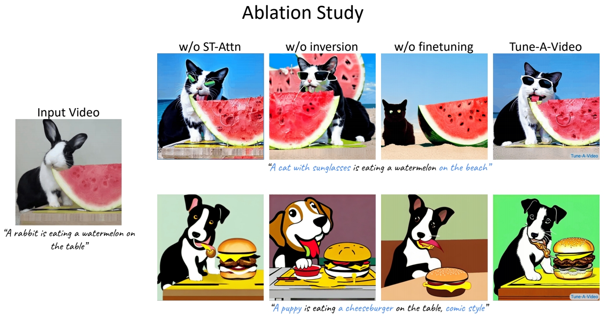
P161
客观指标
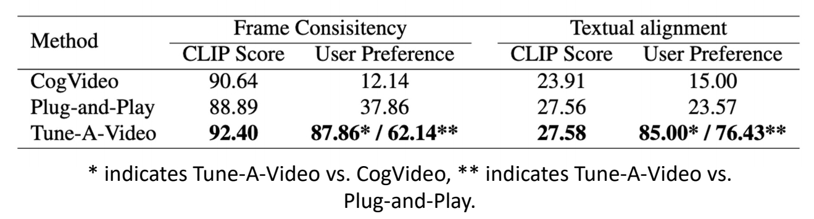
Automatic metrics – CLIP Score
- Frame Consistency: the average cosine similarity between all pairs of video frames
- Textual Alignment: average CLIP score between all frames of output videos and corresponding edited prompts
User study
Compare two videos generated by our method and a baseline (shown in random order):
- Which video has better temporal consistency?
- Which video better aligns with the textual description?
Wu et al., “Tune-A-Video: One-Shot Tuning of Image Diffusion Models for Text-to-Video Generation,” ICCV 2023.
✅ base model：没有太多 motion.
P162
Dreamix
Few-shot finetuning for personalized video editing
Main idea: Mixed Video-Image Finetuning
- Finetune Imagen Video (Ho et al., 2022) which is a strong video foundation model

- Finetuned to generate individual frames (bypassing temporal attentions) & video

Molad et al, “Dreamix: Video Diffusion Models are General Video Editors,” arXiv 2023.
P163
Dreamix
Few-shot finetuning for personalized video editing
Inference Overview
- Corrupt the input video by downsampling and add noise
- Apply the finetuned video diffusion model to denoise and upscale

Molad et al, “Dreamix: Video Diffusion Models are General Video Editors,” arXiv 2023.
P164
One-Shot Tuned Video Editing: More Works
部分笔记移至Mike Shou章节
| 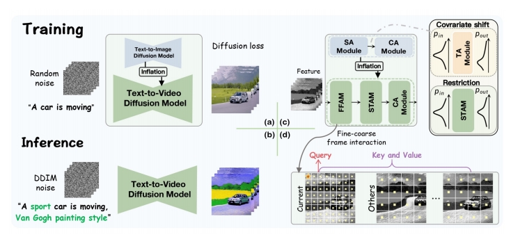 | \(\mathbf{EI^2}\) (Zhang et al.) Modify self-attention for better temporal consistency “Towards Consistent Video Editing with Text-to-Image rDiffusion Models,” arXiv 2023. |
| ID | Year | Name | Note | Tags | Link |
|---|---|---|---|---|---|
| 2023 | Video-P2P: Video Editing with Cross-attention Control | Improve input-output semantic consistency of video editing via shared embedding optimization and cross-attention control。 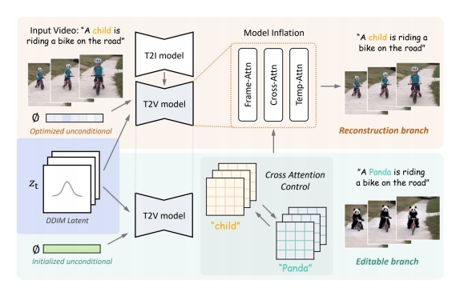 | attention控制 |
✅ 不需要训练的方式。
P165
One-Shot Tuned Video Editing: More Works
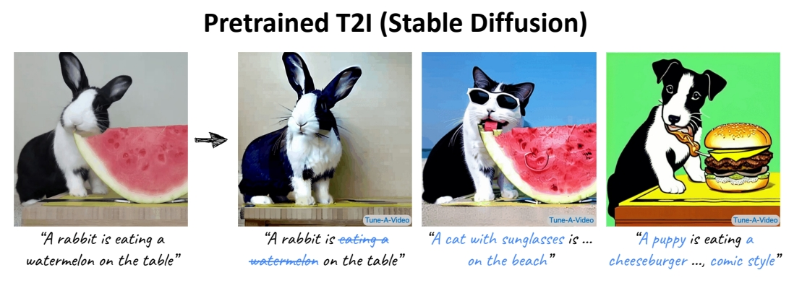
Compared to training-free editing methods:
- Cons: still need 1 video for training
- Pros: supports significant shape change
Wu et al., “Tune-A-Video: One-Shot Tuning of Image Diffusion Models for Text-to-Video Generation,” ICCV 2023.
P166
Multiple-Shot Tuned
Video Editing: Text Conditioned
P167
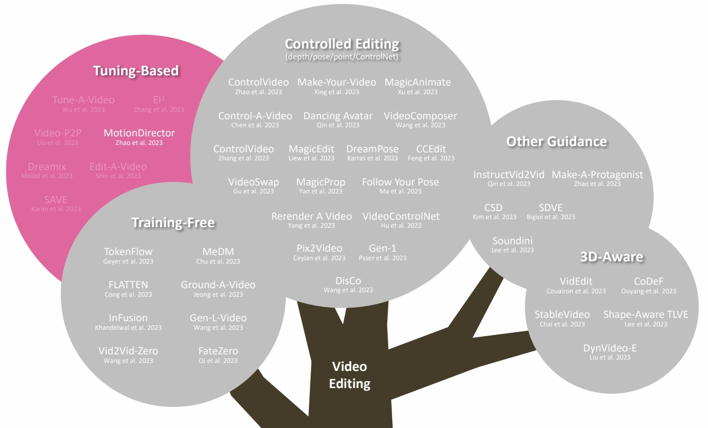
P168
MotionDirector
Tune on multiple videos of a motion to be customised
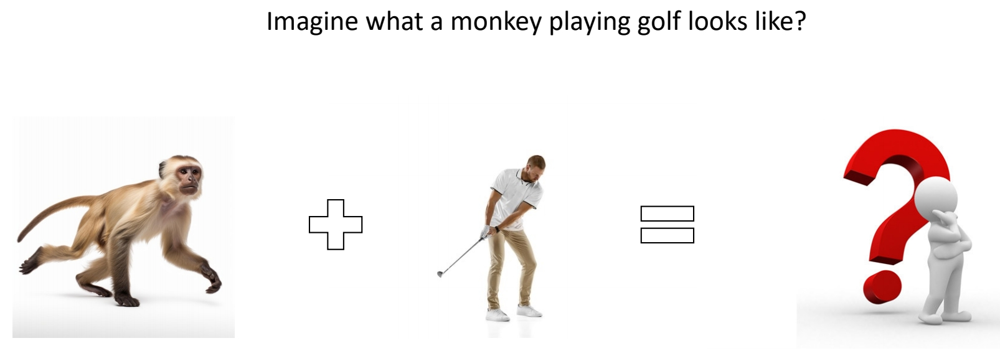
Zhao et al., “MotionDirector: Motion Customization of Text-to-Video Diffusion Models,” arXiv 2023.
P169
MotionDirector
Tune on multiple videos of a motion to be customised
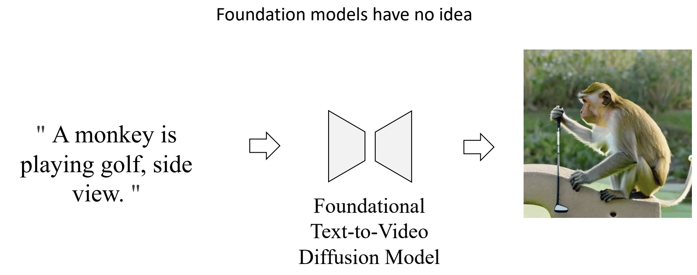
Zhao et al., “MotionDirector: Motion Customization of Text-to-Video Diffusion Models,” arXiv 2023.
P170
MotionDirector
Tune on multiple videos of a motion to be customised
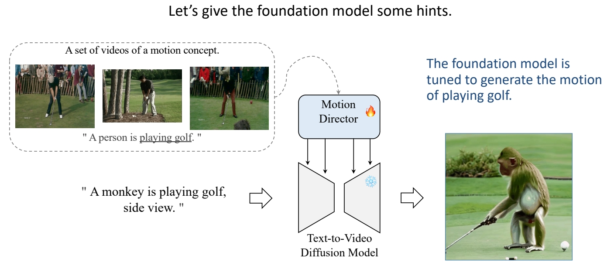
Zhao et al., “MotionDirector: Motion Customization of Text-to-Video Diffusion Models,” arXiv 2023
P171
MotionDirector
Tune on multiple videos of a motion to be customised
- MokonDirector can customize foundakon models to generate videos with desired mokons.

Zhao et al., “MotionDirector: Motion Customization of Text-to-Video Diffusion Models,” arXiv 2023.
P172
MotionDirector
Tune on multiple videos of a motion to be customised
- The challenge is generalizing the learned motions to diverse appearance.
- MotionDirector learns the appearances and motions in reference videos in a decoupled way, to avoid overfitting on the limited appearances.
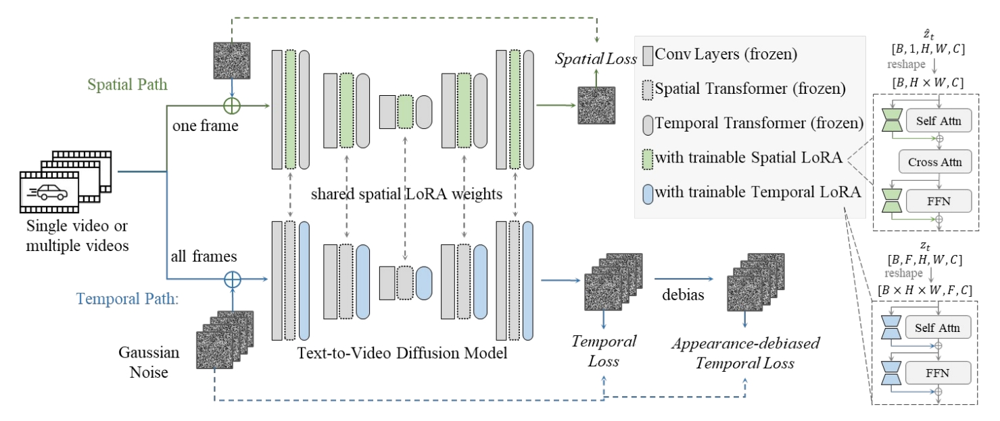
Zhao et al., “MotionDirector: Motion Customization of Text-to-Video Diffusion Models,” arXiv 2023.
P173
MotionDirector
Tune on multiple videos of a motion to be customised
- Decouple appearance and motion.

Zhao et al., “MogonDirector: Mogon Customizagon of Text-to-Video Diffusion Models,” arXiv 2023.
P174
MotionDirector
Tune on muleple videos of a moeon to be customised
- Comparing with other methods.
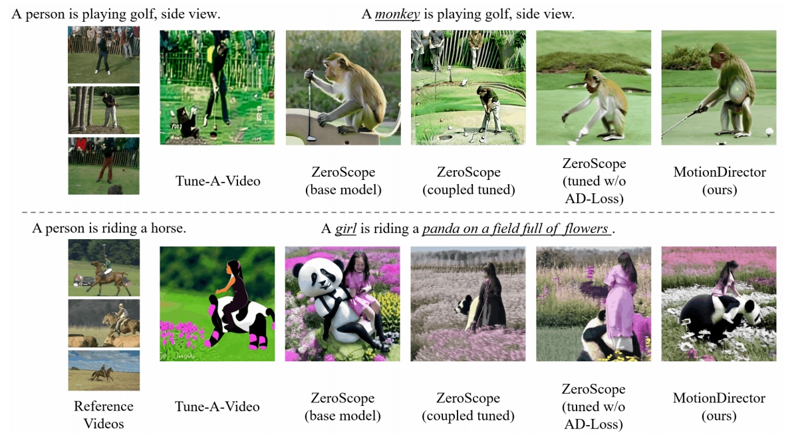
Zhao et al., “MotionDirector: Motion Customization of Text-to-Video Diffusion Models,” arXiv 2023.
P175
MotionDirector
Tune on multiple videos of a motion to be customised
- Comparing with other methods.
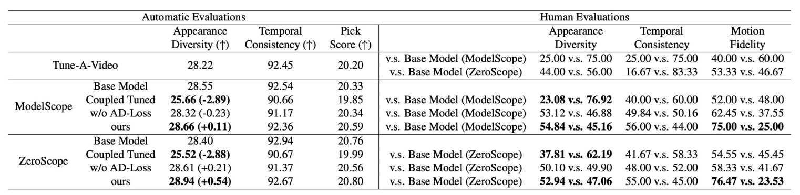
Zhao et al., “MotionDirector: Motion Customization of Text-to-Video Diffusion Models,” arXiv 2023.
P176
MofonDirector
Tune on multiple videos of a motion to be customised
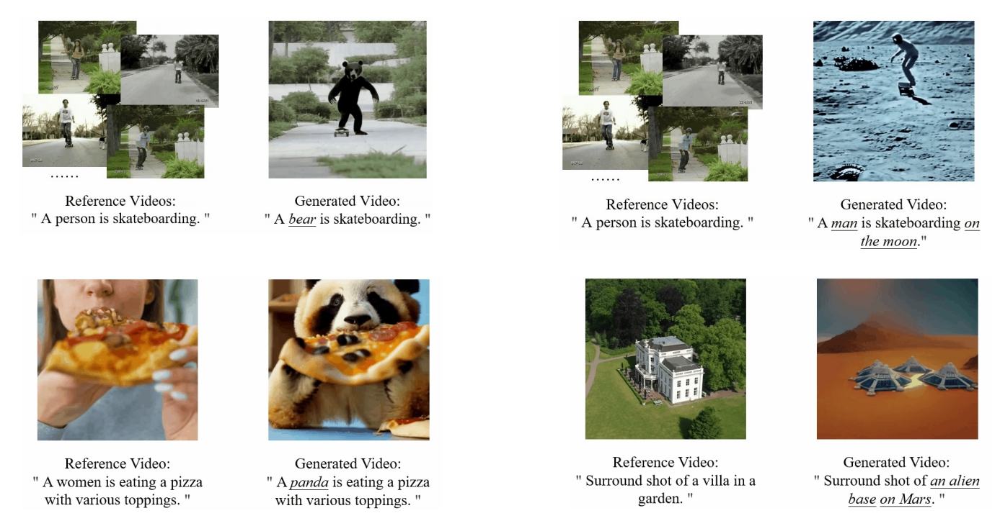
Zhao et al., “MotionDirector: Motion Customization of Text-to-Video Diffusion Models,” arXiv 2023.
本文出自CaterpillarStudyGroup，转载请注明出处。
https://caterpillarstudygroup.github.io/ImportantArticles/
✅ 在一个视频上训练后可以对视频进行编辑。
✅ 训练过程：(1) 对模型的时域模块 finetune．
✅ (2) 对图像打乱后用图像 finetune．
✅ 把视频和图片进行 mix finetune.
✅ 图片 finetune 会把 tenmporal 模块 fix 住。
✅ 需要训练的模型，且针对一个模型进行训练。
✅ 基本泛式：输入：一段视频，一个文生图模型，一个文本提示词。输出：基于定制化的文生图得到文生视频。
✅ 不在大规模上训练，只在一个视频上训练，只需十分钟。
✅ 推断过程：(1) 把视频 dounsample，维度变小。
✅ (2) 加入噪声作为初始噪声，类似于 DDIM Inversion.
✅ (3) 用 diffusion model 生成。
✅ (4) 上采样。
✅ 如果有更多 reference vedio 是不是能学得更好。
✅ (1) 用几段视频学习 concept．
✅ (2) 把 concept 接入到 diffusion model 中。
✅ 通过多段视频学习 motion concept.
✅ 不仅学 motion，还可以学 camera motion，camera motion，物体轨迹。
✅ 怎么把一个 concept 应用到不同的物体上。
✅ 怎样只学 motion 而不被物体的 appearance 影响，能不能 decouple.
✅ 分支1：spatial path，灰色为 spatial LoRA，学习外表信息。
✅ 分支2：temporal path，蓝色为 temporal LoRA，这个 path 用于学习 motion.
✅ debias：去掉 appreance 对 loss 的影响。
✅ temporal LORA 学习时使用但不修改 spatial LORA 的 Weight.
✅ 应用：(1) 也可以用于 one shot
✅ (2) 可以用于 appreace 和 motion 的组合
✅ (3) 可以用于 Image Animation